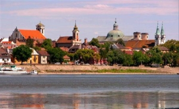
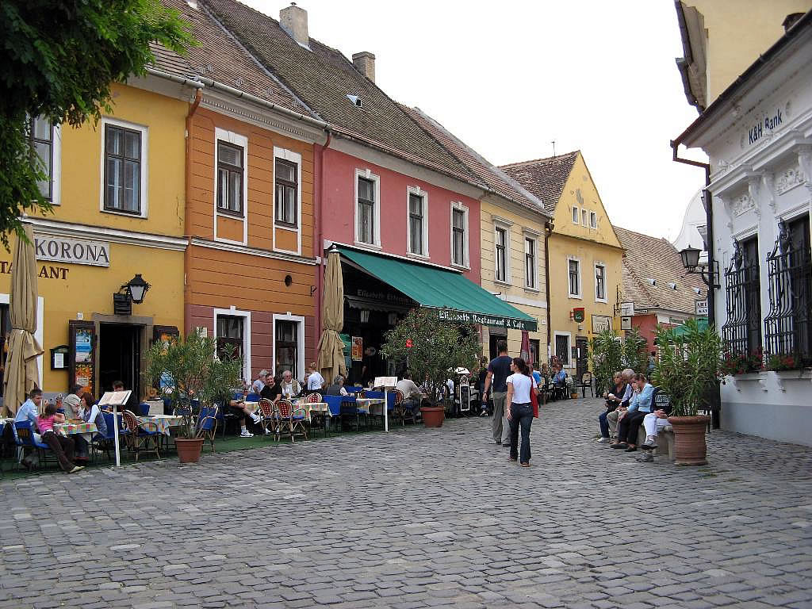

DÉCOUVRIR LA RÉGIONLa ville de Vác est située 30 kilomètres de Budapest dans la courbe du Danube. La gare de Vác est à 15 minutes à pied de la maison, il y a un train direct toutes les heures qui atteint Budapest en une demi-heure. |
|
|---|---|
|  |
VácL’histoire de la ville remonte au 10ème siècle. A voir : la place principale de style baroque, les églises baroques, l’arc de triomphe (le seul en Hongrie), promenade « Ferenc Liszt » au bord du Danube. |
|  |
SzentendreVille d’art située sur l’autre rive du Danube, Szentendre avec ses ruelles pittoresques est une destination idéale pour les amoureux des musées, des terrasses de café sympathiques, des boutiques de produits d’artisanat hongrois. |
 |
VisegrádA une vingtaine de kilomètres en amont sur la rive droite du Danube, Visegrád nous séduit avec sa forteresse médiévale surplombant la Courbe du Danube, son palais royal somptueux, ses cafés, ses restaurants… |
 |
EsztergomVille frontière avec la Slovaquie, Esztergom est un haut-lieu de l’histoire et de la culture hongroises. Lieu de couronnement de notre premier roi, Saint Étienne, ville résidence de l’archevêque primat de Hongrie, Esztergom est incontournable pour tous ceux qui veulent connaître l’histoire spirituelle de la Hongrie. Sa basilique célèbre se dresse – tel un symbole de force spirituelle – au-dessus de la ville et du Danube. |
 |
HollókőHollókő, classé patrimoine mondial par l’UNESCO, est le plus beau village de Hongrie avec ses maisons paysannes entièrement conservées. Il se situe à 80 kilomètres de Vác. |
 |
Le jardin botanique de VácrátótA 13 kilomètres de Vác, découvrez l’un des plus beaux jardins botaniques de Hongrie. |
 |
Parc aux ours à VeresegyházAventure exceptionnelle pour les enfants – le seul parc aux ours en Hongrie – à 20 kilomètres de Vác. |
 |
ZebegényVillage pittoresque sur la rive gauche du Danube à 25 kilomètres au Nord de Vác. Il faut visiter la maison du célèbre peintre Szőnyi István ainsi que l’église paroissiale de style art nouveau entièrement décorée de fresques. |
 |
Sentiers pédestresLes montagnes de Naszály et Börzsöny offrent de nombreux sentiers pédestres aux amoureux de la randonnée. |
 |
Location de canoëLocation de canoë à Verőce (à 10 kilomètres de Vác). Un moyen idéal pour visiter la courbe du Danube. |